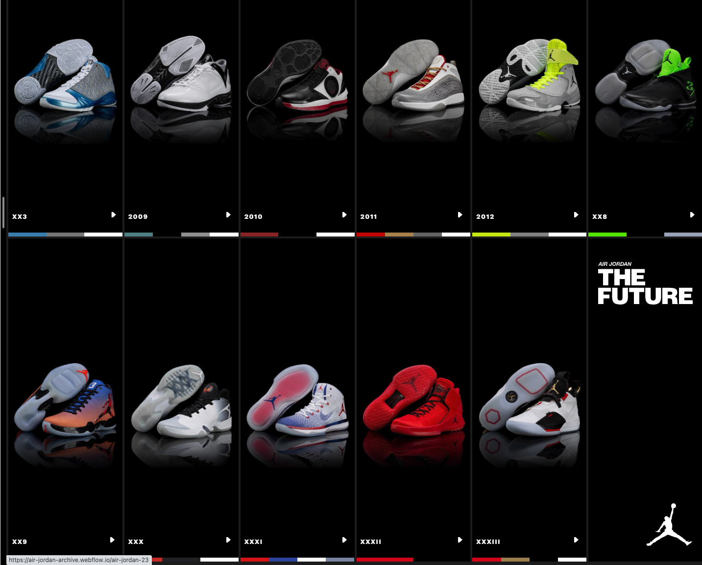
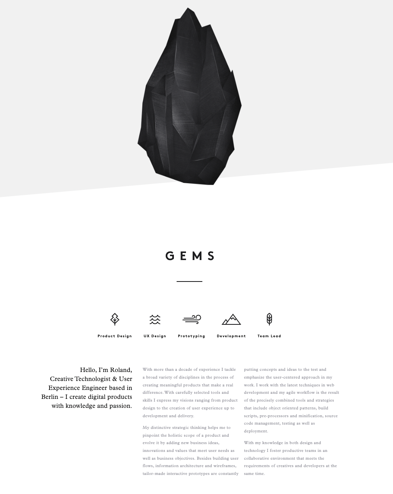

Contrast, Repetition, Alignment and Proximity
Below I have listed four websites that use the fundamental principles of
web design.
CONTRAST
Air Jordans
- This website dives deep into contrast.
- Each shoe is showcased with a color palette on the bottom.
-
The colors of the shoes compliment one another because of the black
contrasted background.

Repetition
DJ Nicole Moudaber
- There is so much Repetition used in her website
- A lot of similar shapes are used in all of the web pages.
- The same color palette is used in each page.
Alignment
Nike
-
The amount of Alignment used in nikes website is so satisfying to look
at.
- All products are aligned perfectly that it doesnt strain my eyes.
- I aspire to build a website like nikes.
Proximity
We ain't plastic
-
I enjoy the white space that is used in this website.
- Its smooth to navigate through and clear.
